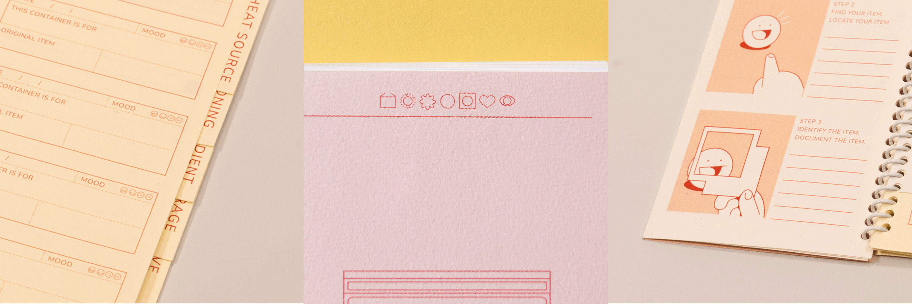
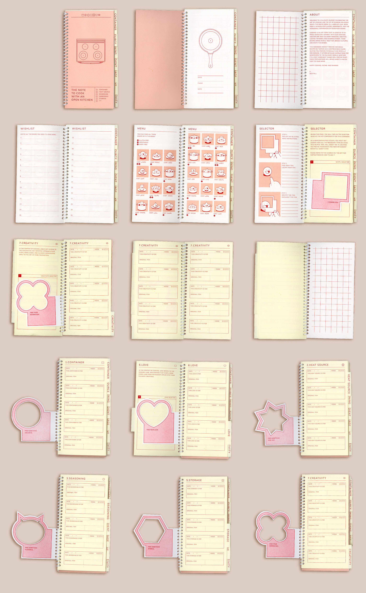

To Cook with An Open Kitchen
Design Studio 3
RISD 2023 Fall
Instructed by: Renee Payne
RISD 2023 Fall
Instructed by: Renee Payne
The follow-up to the poster series "To Cook ___ In Here," this book guides you in locating all essential items for cooking, whether edible or non-edible, within and beyond the kitchen.

